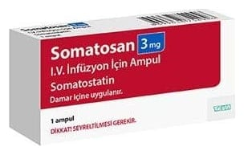

Somatosan 3 mg IV İnfüzyon İçin 1 Ampul

Ne için kullanılır
KT · Bölüm 1SOMATOSAN, somatostatin etkin maddesini içeren liyofilize toz bulunduran 1 adet ampul ve her bir ampul beraberinde liyofilize tozu çözmek için 1 mL çözücü (%0,9’luk sodyum klorür çözeltisi) içeren ampulden oluşmaktadır.
SOMATOSAN bir büyüme önleyici hormondur ve aşağıdaki durumlarda kullanılır: - Sirozlu vakalardaki mide-alt yemek borusu varis kanamalarında - Pankreas ameliyatlarından sonra, pankreas kaynaklı olası hastalıkların önlenmesinde - Ameliyat sonrası ve oniki parmak bağırsağında enfeksiyonlu abse yollarının salgı larını azaltmak için destekleyici tedavi ajanı olarak